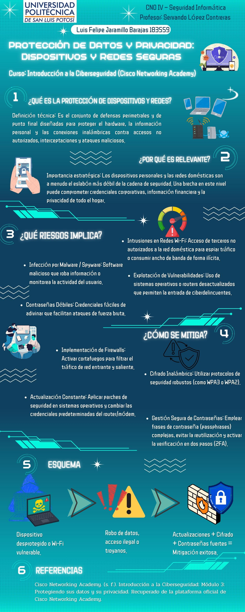

Infografía Completa
Título: Protección de Datos y Privacidad: Dispositivos y Redes Seguras. Se muestra el PDF descargable en la barra lateral.

Estructura del Contenido
La infografía se organiza en seis bloques numerados, siguiendo un enfoque estratégico de qué es, por qué importa, qué riesgos implica y cómo se mitiga:
- 1. ¿Qué es? Definición técnica de la protección de dispositivos y redes: defensas perimetrales y de punto final contra accesos no autorizados, interceptaciones y ataques.
- 2. ¿Por qué es relevante? Los dispositivos personales y las redes domésticas suelen ser el eslabón más débil de la cadena de seguridad.
- 3. ¿Qué riesgos implica? Infección por malware/spyware, contraseñas débiles, intrusiones en redes Wi-Fi y explotación de vulnerabilidades por software desactualizado.
- 4. ¿Cómo se mitiga? Firewalls, actualizaciones constantes, cifrado inalámbrico (WPA2/WPA3) y gestión segura de contraseñas con 2FA.
- 5. Esquema propio, que resume el flujo: dispositivo desprotegido → robo de datos o troyanos → actualizaciones + cifrado + contraseñas fuertes = mitigación exitosa.
Enfoque estratégico
Más allá de la definición técnica, se busca comunicar el impacto: una brecha en un dispositivo o red doméstica puede comprometer credenciales corporativas, información financiera y la privacidad de todo el hogar — de ahí la importancia de tratarla como una prioridad, no solo como un tecnicismo.